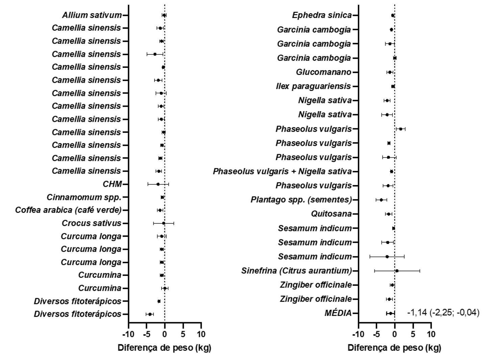

Forest plot de revisões sistemáticas e meta-análises de fitoterápicos e fitofármacos para perda de peso.

Legenda: CHM, medicina tradicional chinesa; * como um ingrediente de produto composto. Os valores estão expressos em média e intervalo de confiança de 95%. Se as barras tocam ou atravessam a linha pontilhada, significa que o efeito não é estatisticamente significativo. Os resultados aqui apresentados não foram uma meta-análise pois não consideraram o tamanho amostral de cada estudo. Fonte: Elaborado pelos autores a partir da literatura.
Sempre que vamos tratar um paciente com uma doença metabólica, independentemente de se utilizarem fitoterápicos ou não, um dos principais elementos iniciais é o alinhamento das expectativas do paciente e do profissional de saúde quanto ao tratamento. Um paciente pode trazer expectativas irreais a respeito do efeito esperado com o tratamento. Ao mesmo tempo, um profissional menos experiente pode se decepcionar com um efeito não tão intenso quanto ao que esperava.
No caso da obesidade, o efeito médio dos fitoterápicos na redução de peso é de apenas –1,14 kg
(variando de –2,25 a –0,04 kg).
Clique na imagem para ampliá-la.